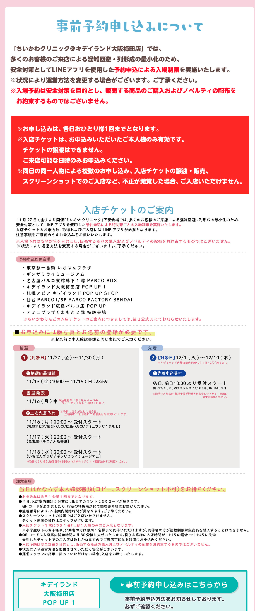
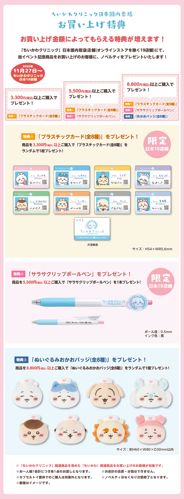
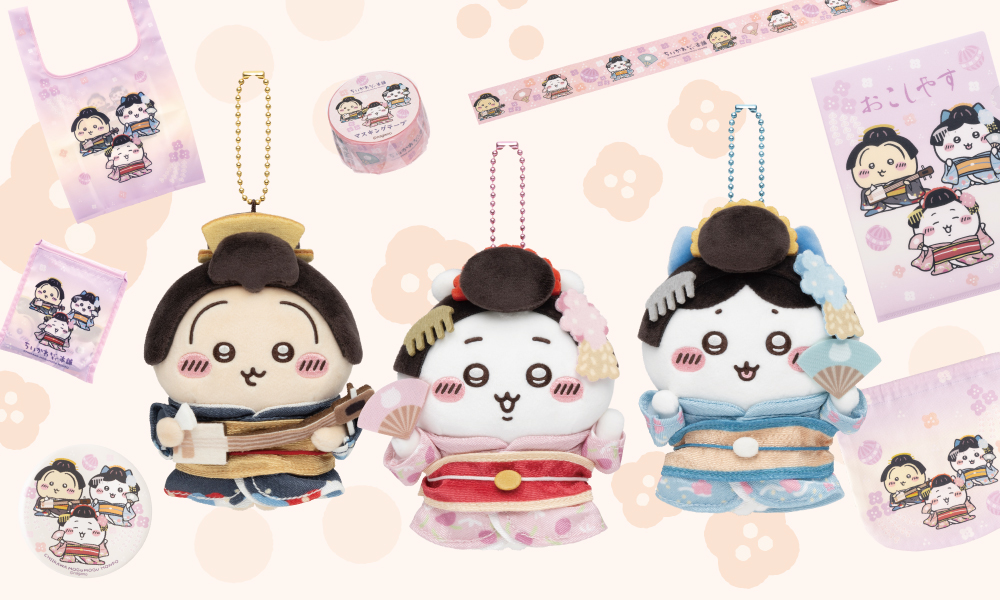
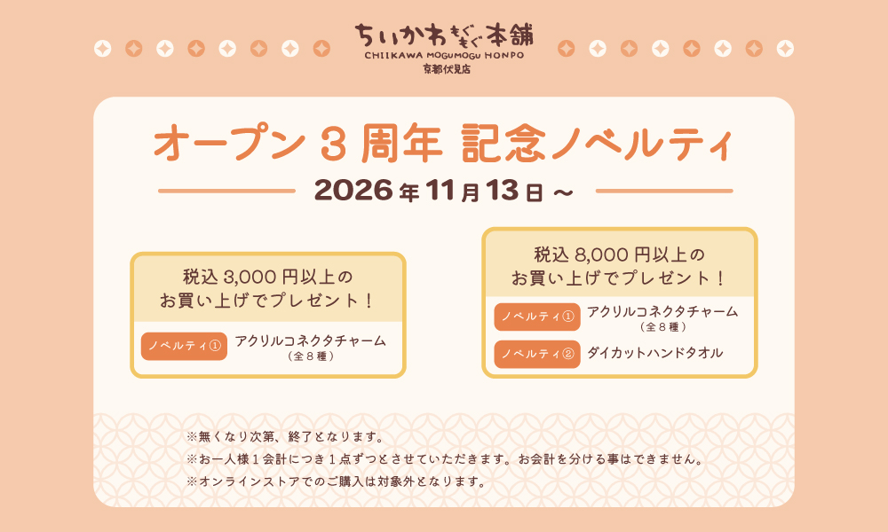
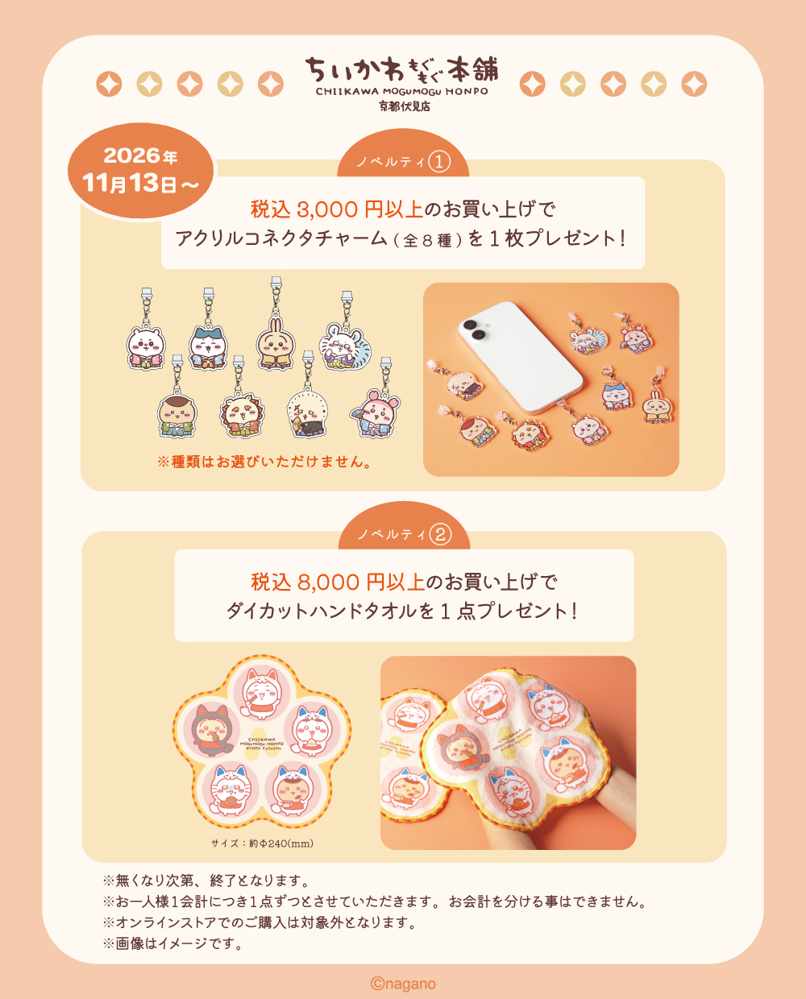
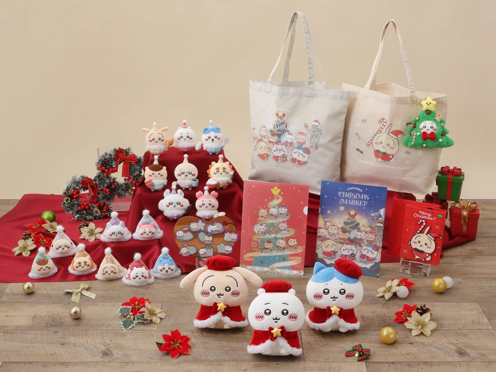
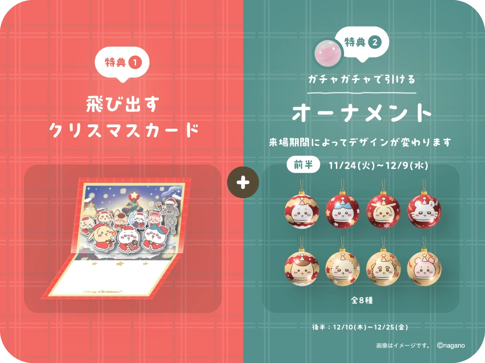
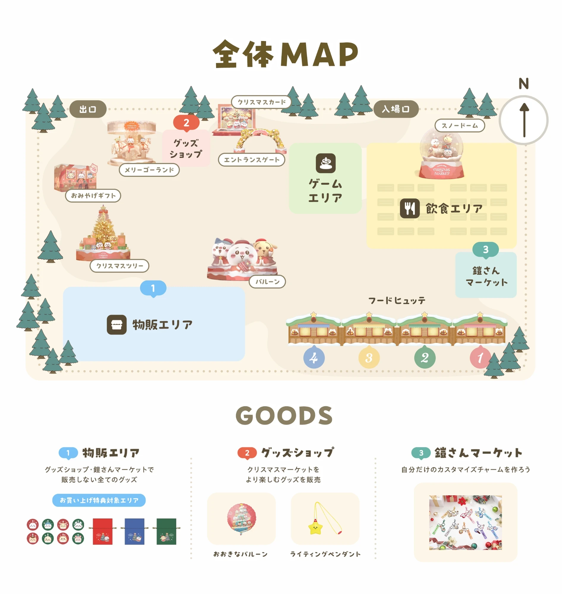
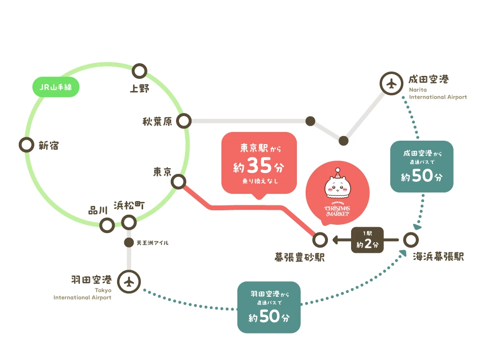
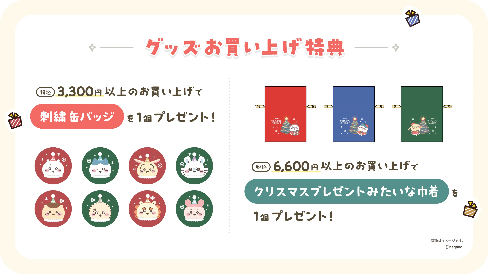

📅 活動期間一覽
| 活動 | 期間 | 地點 | 入場 | 官方 |
|---|---|---|---|---|
| 🏥 診所第1彈 | 11/27（五）起（常設店無結束日） 梅田快閃 11/27–12/9 · 華山 12/18–2027/1/10 第2彈 12/11 確定（我們已回國） | 吉伊卡哇樂園各店、KIDDY LAND 梅田、華山 | 京都 11/27–12/3、PARCO 11/27–12/1、梅田 11/27–12/9 要 LINE 票 | X · LINE（梅田） |
| ⛩️ 伏見店 3週年 | 11/13（五）起（官方沒寫結束日，售完為止） | もぐもぐ本舗 京都伏見店 | 平日原則直接進，人多時店頭發整理券（當天看 X）；週末假日前一晚 20:00 LINE 先搶 | X · LINE |
| 🎄 聖誕市集 | 11/24（二）–12/25（五） | 千葉 幕張 豊砂公園 | 要買日期時段票，已完售 | X · 官網（無 LINE） |
ちいかわクリニック（吉伊卡哇診所）第1彈整理
資料來源：chiikawa-info.jp 官方頁面（2026/11/12 擷取，11/23 重新核對；入店規則依 @chiikawa_land 11/19、11/23 公告更新）。價格皆為日圓含稅。店舖可能依現場狀況調整限購數，出發前請再確認官方 X / Instagram。

活動期間・發售時程
第1彈：2026/11/27（五）起
吉伊卡哇線上商店 11:00 開賣
第2彈：2026/12/11（五）確定，官網已放商品圖（我們已回國；華山 12/18 起有可能有）。梅田改由ちいかわらんど大阪梅田店賣（KIDDY LAND 11/26 公告）
🧳 這趟（11/29–12/6）買診所新品的機會
京都沒搶到，剩梅田（要搶）、PARCO（直接進）兩條。
| 地點 | 哪天能去 | 要不要搶票 |
|---|---|---|
| 京都四条河原町（診所商品區） | 11/27–12/3 預約期內 | 沒搶到（抽選、11/24 二次先搶都沒位）→ 店內其他區照常逛，診所區進不去 |
| KIDDY LAND 大阪梅田 | 12/1–12/9 | 要：每天前一晚 18:00 LINE 先搶，每天都有一次機會（例：12/4 晚搶 12/5）· 帶護照 |
| 心斎橋パルコ（整間店） | 12/2 起 | 不用：預約只到 12/1，之後直接進。缺點是開賣一週後熱門款可能已賣完 |
- KIDDY LAND：要先在 LINE 登錄大頭照＋護照拼音姓名，出發前就弄好；12/05 去 → 12/04 18:00 搶。
- 12/05 是週六：PARCO 雖不用預約但人多，KIDDY LAND 週六票也較難搶。
- 沒搶到京都診所區：官方寫滿額贈對象是「含診所商品在內的吉伊卡哇相關商品」→ 照字面在其他區買滿 ¥3,300 應該也送卡片（推論，現場確認）。
- 伏見店（もぐもぐ本舗）不賣診所商品，滿額贈也不同（伏見 ¥3,000／¥8,000，這裡 ¥3,300／¥5,500／¥8,800）。
官方註明「會視情況變更運營方式」→ 出發前和當天早上看 @chiikawa_land。
⚠ 大阪梅田 POP UP 要先抽入場券
キデイランド大阪梅田店 POP UP 1（KIDDY LAND 大阪梅田店 快閃店）（期間 11/27–12/9）採 LINE 預約入場制，必須持入店票才能進場。
LINE 官方帳號 官方梅田說明頁 KIDDY LAND 活動 X
| 你要去的日期 | 方式 | 時間 |
|---|---|---|
| 11/27（五）～11/30（一） | 抽選（抽籤） | 報名：11/13（五）10:00 ～ 11/15（日）23:59 公布：11/16（一）當天之內（官方沒寫幾點，當天記得去看） 查看方式：LINE 報名頁面裡的「マイチケット」（我的票券） 二次先搶（有空位時）：11/17（二）20:00 起（名古屋/大阪梅田） |
| 12/1（二）～ 12/9（三） | 先搶 | 每天 前一日 18:00 開放，例：12/1 的票 11/30 18:00 開搶 |
- 報名需要 LINE，並登錄大頭照與姓名（姓名須與身分證件相同寫法 → 用護照拼法）。
- 當天必帶本人身分證件正本（護照），不接受影本/截圖。
- 每人每日每會場限申請 1 次；票券不得轉讓；1 張票限 1 人結帳。
- 入場前 5 分鐘 LINE 會送 QR code；QR 在入場開始時間 30 分鐘後失效。
- 票上的字母＋號碼＝集合時刻：A 組 09:50 起，每 15 分一批，到 U 組 20:05；時間到就去店頭排同號碼的位置，遲到可能不能進。A1–25 要 09:50 前到阪急三番街北館 1F 指定地點（官方集合時刻表）。
- 入場預約只是安全措施，不保證買得到商品或拿得到滿額贈。
注意：「ちいかわらんど(吉伊卡哇樂園) 大阪梅田店」不在本次販售名單；梅田的會場是 キデイランド(KIDDY LAND)大阪梅田店（TEL 06-6372-7701，10:00–21:00）。
看原圖（梅田預約說明）

行程中的店家
🟢 京都｜ちいかわらんど 京都四条河原町店 📍
吉伊卡哇樂園 京都四條河原町店
11/27 起販售（常設店，無結束日）
有賣：新商品（雜貨・服飾・扭蛋托特包）＋ 扭蛋（罐徽章/壓克力立牌）＋ 滿額贈
入店票（官方 X 11/19 公告）：11/27～12/3 只有「診所商品區」要 LINE 預約（30 分鐘一梯），店內其他區照常進。
- 抽選 11/20–11/22 已截止，11/23 公布（部分人沒收到通知 → 到 LINE 迷你程式「お知らせ」或「ちいかわ・ナガノキャラクターズチケット」店舖頁看）。
- 二次先搶：11/24（二）20:00（京都四条河原町／心斎橋パルコ／金沢），有空位才放。
- 12/4 起：預約期已過，應是一般入店（官方沒另外寫，是推論）。
🟢 大阪｜ちいかわらんど 心斎橋パルコ店 📍
吉伊卡哇樂園 心齋橋 PARCO 店
11/27 起販售（常設店）
販售內容同京都店。
入店票：11/27～12/1 整間店都要 LINE 預約（4 家整店限制之一），抽選已截止；二次先搶 11/24（二）20:00。12/2 起預約期結束。
🟢 大阪｜キデイランド大阪梅田店 POP UP 1 📍
KIDDY LAND 大阪梅田店 快閃店 第1期
11/27（五）～12/9（三）10:00–21:00
有賣：新商品＋扭蛋＋滿額贈
需 LINE 預約入場（見上方）
日本店舖滿額贈（19 家實體店：11 家吉伊卡哇樂園＋8 家診所會場）
| 單次結帳金額（含稅） | 贈品 |
|---|---|
| ¥3,300 以上 | ①塑膠卡（全 8 種隨機 1 張，診所掛號證造型） |
| ¥5,500 以上 | ① 卡片 ＋ ② SARASA 原子筆（0.5mm 黑） |
| ¥8,800 以上 | ① ＋ ② ＋ ③ 布偶臉徽章（全 8 種隨機 1 個） |
- 對象：含「ちいかわクリニック（吉伊卡哇診所）」商品在內的吉伊卡哇相關商品。
- 每人每次結帳每種各 1 個；不可合併或分開結帳；扭蛋機購買不算；送完為止。
看原圖（日本）

看原圖（華山）

限購規則總覽
- 一般商品：每次結帳每款 1 件（多款式就是各 1 件）。
- 有尺寸的服飾：每次結帳每個圖案 1 件（不分尺寸）。
- 隨機盒玩：每次結帳最多 1 盒（ミニケース 迷你收納盒 8 個／カード 閃卡 10 個）；整盒不保證全種類。
- 扭蛋托特包：每次結帳 6 個（1 盒）。
- 扭蛋（罐徽章/立牌）：店頭每人合計 10 次。
- 店舖可能依狀況變更限購數量。
商品一覽
點圖可放大。圖片是官方頁面截圖，每張內含該商品所有款式。
ちいかわもぐもぐ本舗 京都伏見店 3週年紀念商品
資料來源：もぐもぐ本舗 官方商品頁、伏見店官方頁、@chiikawamgmg（2026/11/23 擷取）。價格皆為日圓含稅。官方註明「部分商品有購買限制」，但沒寫數量。

基本資訊
活動期間：11/13（五）起，官方沒寫結束日（售完為止）· 伏見店 11/14 滿 3 週年
もぐもぐ本舗線上商店同步販售
📍 京都市伏見区深草稲荷中之町46-1（伏見稻荷參道上）
🕘 9:30–17:30 · JR 稲荷駅走 5 分／京阪伏見稲荷駅走 10 分 📍
店舖共通 9 款（川越、小樽也有）＋ 伏見店限定 14 款
入店規則
- 11/13–11/15：抽選預約（已結束）。
- 11/16–11/20：LINE 數位票先搶（每天前一晚 20:00）（已結束）。
- 平日：原則一般入店，不用 LINE 票（官方：「上記期間以外は通常入店」）。
- 週六、日、國定假日：官方 11/11 公告寫「仍需 LINE 數位票」，但沒寫到哪天為止（每人 1 張、先搶，前一晚 20:00 開放，沒有位置限制）。
- ⚠ 人多時平日也會臨時發「整理券」限制入場（店頭發，不是 LINE；例：11/25（三）官方公告）→ 當天早上先看 @chiikawamgmg 有沒有整理券公告，有的話早點到現場領。
⚠ 缺貨中（官方 X 11/22）
伏見店目前缺貨，會再補貨但日期未定：
- 舞妓吉伊卡哇吊飾、藝妓兔兔吊飾（3週年限定）
- 鳥居托特包、相良刺繡小包（吉伊卡哇）、伴手禮餅乾、吉伊卡哇牛奶麵包（常態商品）
去之前看 官方缺貨／補貨公告；很想要的話線上商店也有賣。
伏見店 3週年滿額贈（11/13 起，送完為止）
| 單次結帳金額（含稅） | 贈品 |
|---|---|
| ¥3,000 以上 | 壓克力連結吊飾（全 8 種隨機 1 個） |
| ¥8,000 以上 | 壓克力連結吊飾 ＋ 造型手帕毛巾（直徑約 24cm） |
- 只限伏見店實體購買；每人每次結帳各 1 個；不可分開結帳。
- 線上商店另有滿 ¥8,000（不含運費）送餐具組，和店舖贈品不同。
看原圖（滿額贈條件）

看原圖（贈品實物）

商品一覽
點圖可放大。每張圖內含該商品所有款式。
ちいかわクリスマスマーケット（吉伊卡哇聖誕市集）
資料來源：官方網站（含 商品頁、FAQ）、@chiikawa_xmas（2026/11/23 擷取）。價格皆為日圓含稅。

基本資訊
活動期間：2026/11/24（二）～12/25（五）
11:00–21:00（最後入場時段 18:30–19:00）· 燈光約 16:00 起
📍 千葉市 幕張 豊砂公園（AEON MALL 幕張新都心前）
千葉県千葉市美浜区豊砂1-12 📍
JR 京葉線「幕張豊砂駅」走 10 分（東京站直達約 35 分）
官方：X @chiikawa_xmas · 官網 · 專用 App（沒有 LINE 帳號）
🧳 這趟能買嗎？
- 會場去不了：在千葉（東京旁），這趟在京阪；而且門票已完售。
- 網購：11/24（二）11:00 起「ちいかわぽけっとグッズストア」販售部分商品（官方沒列是哪幾款，以商店為準）。官方註明網購只寄日本國內 → 要日本地址或代購／轉運；網購沒有滿額贈。
- 下面「會場限定」那組網路買不到。
入場方式（要不要搶票）
- 一定要買「日期＋時段」門票，只在 アソビュー！ 販售；現場沒有當日券、超商也沒有賣。
- 先行抽選 10/15–10/25（已結束）→ 先著 10/31 12:00 起 → 官網 11/23 顯示「チケットは完売いたしました」（已完售）。之後有沒有釋票看 @chiikawa_xmas。
- 一次最多買 4 人；購買者本人要同行，不能轉讓；買了不能退、不能改日期。
- 入場可能查證件：要帶護照正本（名字要和購票時一樣）。
- 入場隊伍在票面時段前 15 分開始排（官方 X 11/23）。
- 入場後 2 小時 30 分內才能排商品、點餐、拿鎧さんマーケット整理券、再入場（用手機＋手環管時間）。
- 要有智慧型手機：點餐、鎧さんマーケット整理券要用專用 App（同行者也要下載）；買商品不用 App，現場排隊。
| 票價（含稅） | 平日 | 週末假日 |
|---|---|---|
| 大人（12 歲以上） | ¥2,500 | ¥2,800 |
| 兒童（4–11 歲） | ¥1,200 | ¥1,400 |
| 4 歲以下免費（每位大人帶 1 位） | ||
門票贈品：立體聖誕卡＋現場大扭蛋轉 1 次拿聖誕球吊飾（全 8 種；前半 11/24–12/9、後半 12/10–12/25 圖案不同）。
看原圖（門票贈品）

看原圖（會場地圖）

看原圖（交通）

買商品的規則
- 只有入場的人能買；商品區每人只能進一次、結帳一次，結完不能再補買。
- 每款限購 1；隨機鏡面貼紙／壓克力小吊飾：單品最多 8 個或 BOX 1 盒（不能混買）。
- 每天備貨，當天賣完隔天會再賣（部分商品可能不再補）。
- 全場只收無現金：信用卡（Visa/Master/JCB/AMEX/銀聯等）、交通 IC、PayPay、Alipay+、WeChat Pay 等。
| 會場滿額贈（單次結帳，含稅） | 贈品 |
|---|---|
| ¥3,300 以上 | 刺繡罐徽章（全 8 種隨機 1 個） |
| ¥6,600 以上 | 刺繡罐徽章 ＋ 聖誕禮物造型束口袋（全 3 種隨機 1 個） |
只限會場；不可合併或分開結帳；送完為止。
看原圖（滿額贈）

商品一覽（全 92 款）
點圖可放大。官方網站商品圖。
- 本頁為個人非營利整理，內容僅供參考，商品、價格、限購、販售日期及入場方式請以官方公告為準。
- 本頁所有圖片均擷取自官方網站，著作權屬原權利人所有（©nagano）。
- 官方資訊來源： ちいかわクリニック 官方頁面／ 大阪梅田 官方頁面／ 華山 官方頁面／ ちいかわマーケット（吉伊卡哇線上商店）／ もぐもぐ本舗 3週年官方頁／ もぐもぐ本舗線上商店／ ちいかわクリスマスマーケット 官方網站
- 如權利人認為本頁內容有侵權疑慮，請至 GitHub Issues 留言聯絡我，我會儘速撤除相關內容或關閉網頁。